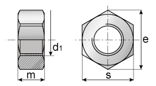

Гайки с шестигранной головкой по ГОСТ 5915 и 5927
Краткое описание товара
Применяется в машиностроении и строительстве в качестве деталей соединения.
Краткие характеристики
- Класс точности: B, A.
- Поле допуска резьбы: 6H.
- Класс прочности: 4; 5; 6; 8; 10; 12.
Технические характеристики
| Параметры | Приложение №2 | ||||
| Номинальный диаметр d резьбы | 10 | 12 | 14 | 22 | |
| Размер S "под ключ" | 17 | 19 | 22 | 32 | |
| Диаметр описанной окружности e не менее | 18.7 | 20.9 | 23.9 | 35 | |
| Dw не менее | 15.5 | 17.2 | 20.1 | 29.5 | |
| Теоретическая масса 1000 шт. гаек (исполнение 1) с крупным шагом резьбы, кг | 12.06 | 18.4 | 28.91 | 85.67 | |
Полное описание товара
Гайки выпускаются классом прочности от 4 до 12. Начиная с 5-го, класс прочности обязательно наносится на поверхность изделия. При изготовлении используют углеродистые легированные и нелегированные стали, что обеспечивают жаропрочность и износостойкость, а также цветные сплавы, латуни, бронзы, нержавеющую сталь, которые дают коррозионную стойкость.ГОСТ предусматривает изготовление гаек промежуточных размеров, но их не рекомендуют использовать из-за сложности поиска и замены на новые. Гайка ГОСТ 5915/5927 является самой распространенной благодаря массовости производства, а следовательно – низкой цены. Применяются для фиксации резьбового соединения, используется в комплекте с болтами, винтами, шайбами и гроверами, которые легко можно подобрать на сайте. Благодаря большому количеству размеров, шагов резьбы, гайки нашли широкое применение в медицине, тяжелой промышленности, сельском хозяйстве, автомобилестроении и т. д. Различные материалы, из которых изготавливаются гайки, позволяют их использовать в самых тяжелых и неблагоприятных условиях. Класс точности В обеспечивает легкую сборку-разборку резьбового соединения.
ГОСТ 5915-70ГОСТ 5927-70